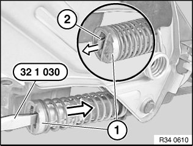
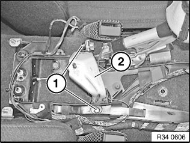
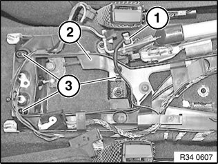
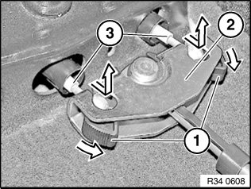
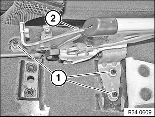
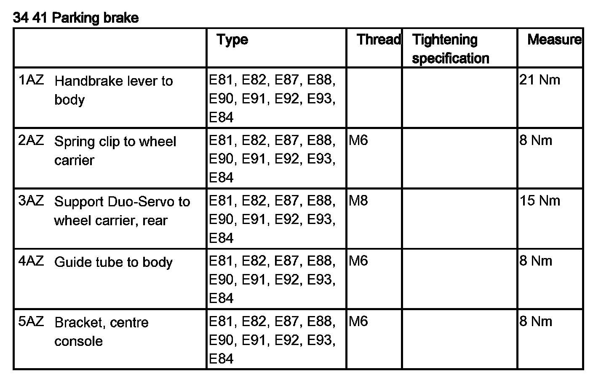
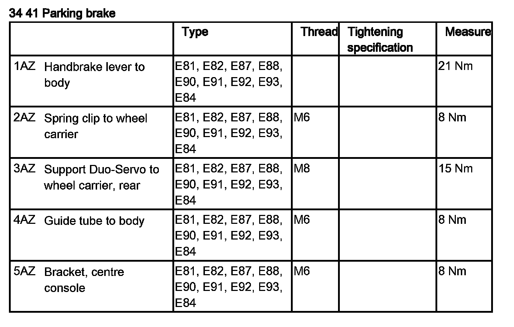

34 41 000 Removing and Installing/Replacing Handbrake Lever
34 41 000 Removing and installing / replacing handbrake leverSpecial tools required:
Necessary preliminary tasks:
^ Disconnect battery negative lead
^ Remove airbag control unit
Note:
If the parking brake lever is replaced, the handbrake lever grip must also be replaced.
Lock adjuster unit (ASZE).
Actuate parking brake lever. Connect special tool 32 1 030. Press stop (1) of adjusting spring back to such an extent that retaining hook (2) engages in stop (1).

Installation:
Unlock adjuster unit (ASZE).
Lever out restraining hook (2) with a suitable screwdriver.
Restraining hook (2) must detach from stop (1) of adjusting spring.

Release screws (1).
Tightening torque 34 41 5AZ.
Remove bracket for center console (2).

Disconnect cable (1) from handbrake check switch.
Unclip cable bracket (2) at point (3).
Remove cable bracket and place forward.
Press retainer (1) in balance arm (2) forward in direction of arrow.

Detach handbrake Bowden cables (3) from balance arm (2).

Release nuts (1) and remove parking brake lever (2).
Installation:
Replace self-locking nuts.
Tightening torque 34 41 1AZ.
Parking brake lever and adjustment unit (ASZE) are only exchanged completely as a single unit.

